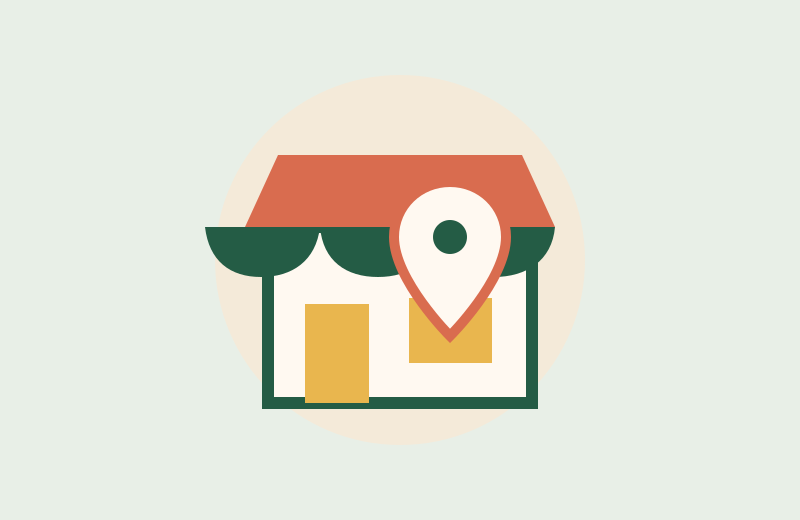

Một vòng Việt Nam, qua từng món ngon
Khám phá hương vị Việt, tìm quán ngon quanh bạn.
Từ món ăn đường phố dân dã đến đặc sản vùng miền, tìm cảm hứng cho bữa ăn tiếp theo của bạn.

Bản đồ vị giác
Ngon từ Bắc chí Nam
Khám phá những món ăn làm nên bản sắc ẩm thực Việt Nam.
Để Vị Việt chọn giúp
Hôm nay ăn gì?
Chọn vài khẩu vị bạn thích. Một gợi ý ngon lành sẽ xuất hiện ngay.
Mở cửa, đi ăn thôi
Quán ngon quanh bạn
Tìm những địa điểm ăn uống gần đây từ dữ liệu OpenStreetMap.
Chỉ khi bạn nhấn nút, trình duyệt mới hỏi quyền truy cập vị trí. Tọa độ chỉ dùng cho lần tìm này, không được lưu. Vị trí thường yêu cầu HTTPS hoặc localhost.
Quán ăn hiển thị từ OpenStreetMap. Dữ liệu có thể chưa đầy đủ.

Chưa có địa điểm phù hợp trong lần tìm này.
Câu chuyện của Vị Việt
Ngon lành từ những điều gần gũi.
Vị Việt giúp bạn khám phá món ăn ba miền, hiểu thêm chuyện bếp núc vùng miền và tìm quán ăn quanh mình. Một lời gợi ý nhỏ cho những bữa ăn thật vui.